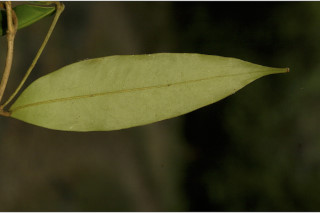

Images :



| Habit : | Evergreen trees , up to 15 m tall. |
| Leaves : | Leaves simple , opposite , decussate ; petiole up to 1.5 cm long, canaliculate ; lamina up to 12 × 4 cm, oblong , apex bluntly acuminate , base rounded or acute , margin entire . |
| Inflorescence / Flower : | Flowers solitary or paired in the axils of the fallen leaves ; pedicels up to 2.5 cm long, glabrous ; petals white. |
| Fruit and Seed : | Capsule , globose , up to 2 × 1.7 cm, 2 lobed , pointed at apex , 1-seeded . |